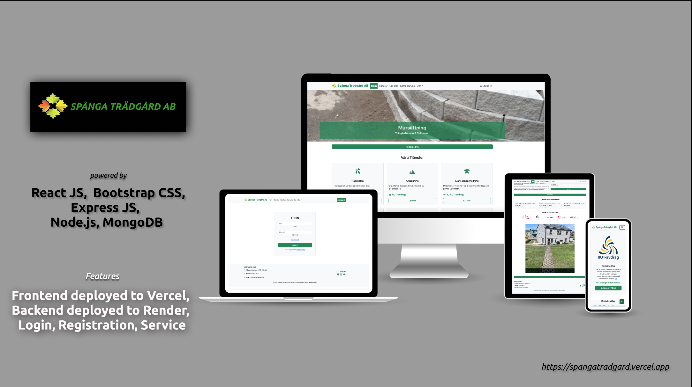

Spånga Trädgård AB
Project Overview
I have built a website using React JS, with a focus on creating a user-friendly and responsive design. The primary goal was to enhance the user experience by ensuring that the website is easy to navigate and visually appealing on all devices, including desktops, tablets, and smartphones.
Design and Development
To achieve this, a carefully selected and customized theme was used that aligns with the brand's identity and optimized for mobile responsiveness. Various plugins were incorporated to add functionality, such as contact forms, social media integration, and SEO tools, which help improve the website's performance and visibility in search engines.
Technical Details
In addition to design and functionality, all dependencies and technical issues were addressed to ensure the website runs smoothly. This included optimizing the website's speed, ensuring compatibility with different browsers, and fixing any bugs or errors that arose during development.
Domain Configuration
Finally, the website was configured to the desired domain name, ensuring that all DNS settings and domain configurations were correctly set up. This process included setting up SSL certificates for security, configuring email accounts, and setting up proper redirects to ensure a seamless transition for users.
Tools Used
Frontend: React JS, Bootstrap CSS
Backend: Express JS, Node JS, MongoDB, Google API reCAPTCHA
Hosting
Frontend: Deployed on Vercel
Backend: Deployed on Render
Testing
Testing was performed using POSTMAN and Thunder Client to ensure API functionality and reliability.
Project Outcome
The focus was on delivering a professional, fully functional website that meets the needs of its users and provides a positive online experience.
Project Link
Visit the project here: spangatradgard.vercel.app
Back to Portfolio